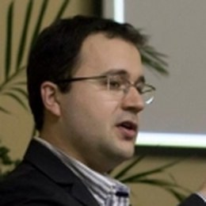

Rafael Soares Zola
ProfessorFaculty
Possui graduação em Física pela Universidade Estadual de Maringá (2005), mestrado em Física pela Universidade Estadual de Maringá (2007) e doutorado em Liquid Crystals - Kent State University (2012). Atualmente é professor da Universidade Tecnológica Federal do Paraná. Tem experiência na área de Física, com ênfase em Equação de Estado, Equilíbrio de Fases e Transições de Fase, atuando principalmente nos seguintes temas: cristais líquidos, problemas elásticos, Colestéricos, problemas de molhamento e interfaces, desenvolvimento de displays e espectroscopia de impedância. Membro permanente da Pós-Graduação em Ciência dos Materiais (PPGCEM) da UTFPR desde 18/11/2018. Membro permanente da Pós-Graduação em Física da UEM desde 02/02/2014. Holds a bachelor's degree in Physics from the State University of Maringá (2005), a master's degree in Physics from the State University of Maringá (2007) and a PhD in Liquid Crystals from Kent State University (2012). Currently a professor at the Federal University of Technology – Paraná. Has experience in Physics, with emphasis on Equation of State, Phase Equilibrium and Phase Transitions, working mainly on the following topics: liquid crystals, elastic problems, cholesterics, wetting and interface problems, display development and impedance spectroscopy. Permanent member of the Graduate Program in Materials Science (PPGCEM) at UTFPR since November 18, 2018. Permanent member of the Graduate Program in Physics at UEM since February 2, 2014.